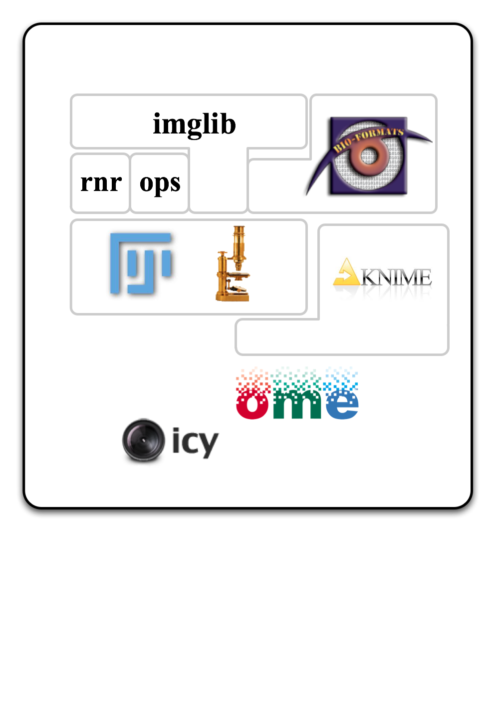

<map name="GraffleExport">
	<area shape=rect coords="270,329,373,396" href="http://fiji.sc/wiki/index.php/Imglib">
	<area shape=rect coords="152,329,255,396" href="http://fiji.sc/wiki/index.php/Imglib">
	<area shape=rect coords="185,211,595,283" href="http://fiji.sc/wiki/index.php/Imglib">
	<area shape=rect coords="603,232,867,397" href="http://www.loci.wisc.edu/software/bio-formats">
	<area shape=rect coords="472,732,718,838" href="https://www.openmicroscopy.org">
	<area shape=rect coords="237,826,448,935" href="http://icy.bioimageanalysis.org/">
	<area shape=rect coords="389,450,543,604" href="http://imagejdev.org/">
	<area shape=rect coords="661,512,886,614" href="http://knime.org/">
	<area shape=rect coords="47,47,944,1015" href="http://fiji.sc/">
</map>

